HW 4.4.10
Contents
Initial-boundary-value Problem
- 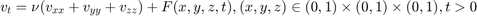
- 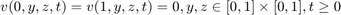
- 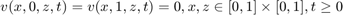
- 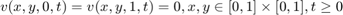
- 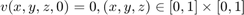
- 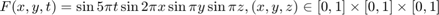
Difference Scheme
Let
- 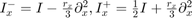
- 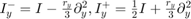
- 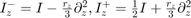
So that
- 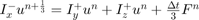
- 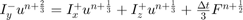
- 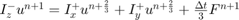
Where 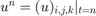
Conditionally stable and order 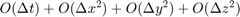
Numerical Solution
ts = [0.06, 0.1, 0.2, 0.4, 0.8]; dx = 0.05; dy = 0.05; dz = 0.05; dt = 0.001; [u, X, Y, Z] = solver_4_4_10_3D(dx, dy, dz, dt); plotSlice_4_4_10_3D(ts, dt, u, X, Y, dz);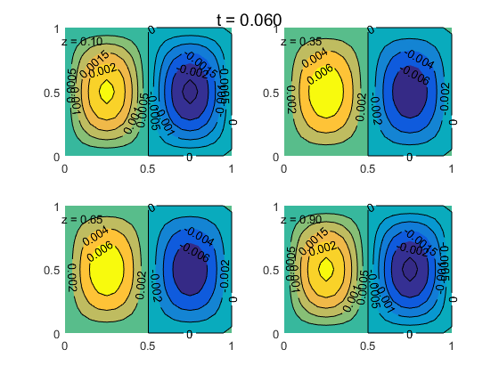 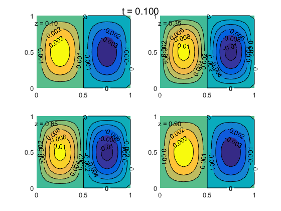 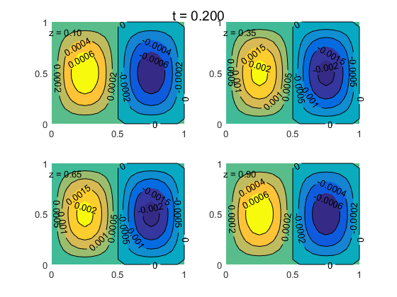 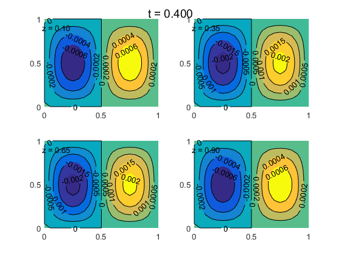
Code: Solver of Functionn
function [u, X_, Y_, Z_] = solver_4_4_10_3D( dx, dy, dz, dt )
f_ = @(X, Y, Z, t)(sin(2 * pi * X) .* sin(pi * Y) .* sin(pi * Z) .* sin(5 * pi * t));
nu = 1;
X = round(1 / dx);
Y = round(1 / dy);
Z = round(1 / dz);
T = round(1 / dt);
x = 1; y = 1; z = 1; t = 1;
Mx = x * X; My = y * Y; Mz = z * Z; N = t * T; prx = nu * dt / dx / dx / 3;
pry = nu * dt / dy / dy / 3;
prz = nu * dt / dz / dz / 3; x_ = 0 : dx : x;
y_ = 0 : dy : y;
z_ = 0 : dz : z;
t_ = 0 : dt : t;
[X_, Y_, Z_] = meshgrid(x_, y_, z_);
u = zeros([size(X_), N + 1]); u_t = zeros(size(u(2 : end - 1, 2 : end - 1, 2 : end - 1, 1)));
u_1 = zeros(size(u_t));
u_2 = zeros(size(u_t)); x__ = x_(2 : end - 1);
y__ = y_(2 : end - 1);
z__ = z_(2 : end - 1);
[X__, Y__, Z__] = meshgrid(x__, y__, z__); A_0 = pry * speye(length(y__));
A_1 = pry * ones(1, length(y__) - 1);
A = -2 * A_0 + sparse(diag(A_1, 1)) + sparse(diag(A_1, -1)); B_0 = prx * speye(length(x__));
B_1 = prx * ones(1, length(x__) - 1);
B = -2 * B_0 + sparse(diag(B_1, 1)) + sparse(diag(B_1, -1)); C_0 = prz * speye(length(x__));
C_1 = prz * ones(1, length(x__) - 1);
C = -2 * C_0 + sparse(diag(C_1, 1)) + sparse(diag(C_1, -1)); coef_Ix = speye(length(x__));
coef_Iy = speye(length(y__));
coef_Iz = speye(length(z__)); coef_prdx2 = 0.5 * coef_Ix + B;
coef_mrdx2 = coef_Ix - B;
coef_prdy2 = 0.5 * coef_Iy + A;
coef_mrdy2 = coef_Iy - A;
coef_prdz2 = 0.5 * coef_Iz + C;
coef_mrdz2 = coef_Iz - C;
coef_inv_mrdx2 = inv(coef_mrdx2);
coef_inv_mrdy2 = inv(coef_mrdy2);
coef_inv_mrdz2 = inv(coef_mrdz2);Lx = length(x__); Ly = length(y__); Lz = length(z__);
oper_X = @(IX, U) permute( reshape( ...
(reshape(permute(U, [2, 1, 3]), Ly, [])' * IX)', [Ly, Lx, Lz]), [2, 1, 3] ); oper_Y = @(IY, U) ...
reshape(IY * reshape(U, Lx, []), [Lx, Ly, Lz]); oper_Z = @(IZ, U) permute( reshape( ...
IZ * reshape(permute(U, [3, 2, 1]), Lz, []), [Lz, Ly, Lx]), [3, 2, 1]); for kk = 1 : N
u__ = u(:, :, :, kk);
u_0 = u__(2 : end - 1, 2 : end - 1, 2 : end - 1);
F_0 = dt / 3 * f_(X__, Y__, Z__, t_(kk));
F_h = dt / 3 * f_(X__, Y__, Z__, 0.5 * (t_(kk) + t_(kk + 1)));
F_1 = dt / 3 * f_(X__, Y__, Z__, t_(kk + 1));
u_1 = oper_Y(coef_prdy2, u_0) + oper_Z(coef_prdz2, u_0) + F_0;
u_1 = oper_X(coef_inv_mrdx2, u_1);
u_2 = oper_X(coef_prdx2, u_1) + oper_Z(coef_prdz2, u_1) + F_h;
u_2 = oper_X(coef_inv_mrdy2, u_2);
u_3 = oper_X(coef_prdx2, u_2) + oper_Y(coef_prdy2, u_2) + F_1;
u_3 = oper_X(coef_inv_mrdz2, u_3);
u(2 : end - 1, 2 : end - 1, 2 : end - 1, kk + 1) = u_3;
end
endCode: Value of Slices
function plotSlice_4_4_3( t_slices, dt, u, X_, Y_, dz ) t_slices_id = round(t_slices / dt) + 1; z_slices = [0.1, 0.35, 0.65, 0.9]; idx = round(z_slices / dz) + 1; for ii = 1 : length(t_slices) figure; hold on; suptitle(sprintf('t = %.3f', t_slices(ii))); for jj = 1 : 4 subplot(2, 2, jj); hold on; [~, h] = contourf(X_(:, :, idx(jj)), Y_(:, :, idx(jj)), ... u(:, :, idx(jj), t_slices_id(ii))); h.ShowText = 'on'; text(-0.019, 0.9, sprintf('z = %.2f', z_slices(jj))); end hold off; end end